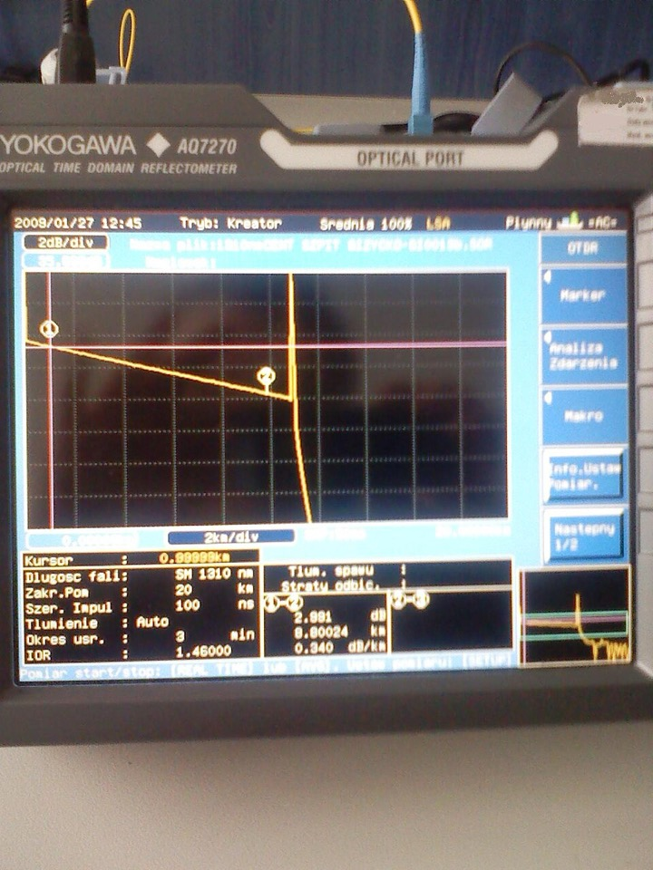

Optical loss, reflections and fibre test limits
Loss is how much optical power failed to reach the far end. A trace lets you ask where the loss or reflection occurred.
Compute a link budget from powers and loss
dBm expresses power relative to 1 mW. A launch at −4 dBm and receive at −7 dBm indicate 3 dB loss, assuming the test reference is set at the chosen endpoints. dB losses of segments and matched connection pairs add. Specification and acceptance conditions set the source, wavelength and measurement method.

Photo by Electron, scaled for the course. Original · CC BY 3.0.


Image by OLC Fiber from Lakewood, CO, USA, scaled for the course. Original · CC BY 2.0.
.jpg){kind=link}
Watch on YouTube · Follow an event on the optical trace and use its location to choose a follow-up check. Reading an OTDR Trace · Corning Optical Communications.
Work out distance from round-trip time
For n = 1.468 and t = 10 μs, distance is about 1,021 m. Incorrect group index shifts reported distances. A large near-end reflection can hide a following event. A shorter pulse can improve separation at the cost of reach or dynamic range.
Interpret reflections and apparent gains
An interface such as a connector or open end can give a reflection. A splice may show as a step with little reflection. A splice can appear to gain power in one OTDR direction because the two fibres backscatter differently. Bidirectional comparison can improve the estimate when the procedure specifies it. Compare an end-to-end loss test to isolate whether the link really meets its budget. Fiber Optic Association reference.